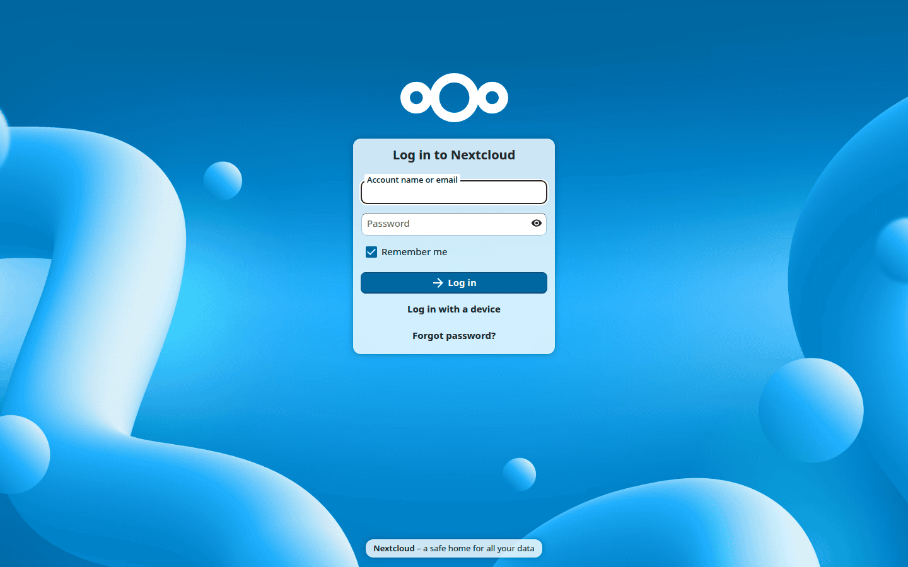

Webové rozhraní Nextcloud
K Nextcloud serveru je možné se připojit s použitím libovolného webového prohlížeče. Ten jen stačí nasměrovat na URL adresu vámi využívaného serveru (např. cloud.example.com) a zadat své uživatelské jméno a heslo:

Požadavky na webový prohlížeč
Pro co nejlepší fungování webového rozhraní Nextcloud, doporučujeme používat nejnovější a podporovanou verzi prohlížeče z tohoto seznamu:
Google Chrome/Chromium (desktop a Android)
Mozilla Firefox (desktop a Android)
Apple Safari (desktop a iOS)
Microsoft Edge
Poznámka
Ne všechny verze jsou podporované. Nextcloud je testován a sestavován s podporou pouze pro tyto verze.
Poznámka
Pokud chcete používat Nextcloud Talk a všechny jeho funkce pro videohovory a sdílení obrazovky, je zapotřebí Mozilla Firefox verze 52 a novější nebo Google Chrome/Chromium verze 49 a novější.
Varování
Microsoft Internet Explorer NENÍ podporován.
Pohyb po hlavním uživatelském rozhraní
Ve výchozím stavu se webové rozhraní Nextcloud otevře na stránce Nástěnka nebo Soubory:

V Souborech je možné přidávat, odebírat a sdílet soubory a správce serveru zde může měnit přístupová oprávnění.
Uživatelské rozhraní Nextcloud obsahuje následující části a funkce:
Nabídka pro výběr aplikací (1): Nachází se v levém horním rohu a naleznete zde veškeré aplikace, které jsou ve vámi využívané instanci Nexcloud k dispozici. Kliknutí na ikonu aplikace vás přenese na podstránku dané aplikace.
Část Informace aplikace (2): Nachází se v postranním panelu vlevo a poskytuje filtry a úlohy, související s vámi právě vybranou aplikací. Například, když používáte aplikaci Soubory, je zde speciální sada filtrů pro rychlé vyhledání vašich souborů, jako například soubory, které vám byly nasdíleny a soubory, které jste nasdíleli ostatním. U ostatních aplikací zde uvidíte různé položky.
Aplikační pohled (3): Hlavní ústřední část uživatelského rozhraní Nextcloud. Zobrazuje obsah nebo uživatelské funkce vámi právě vybrané aplikace.
Lišta Navigace (4): Nachází se nad hlavním zobrazovacím oknem (aplikační pohled) a poskytuje typ „drobečkové“ navigace, která umožňuje přesun na nadřazené úrovně hierarchie složek až po úroveň kořenu (domovská).
Tlačítko Nové (5): Nachází se na liště Navigace a umožňuje vytvářet nové soubory, složky a nahrávat soubory.
Poznámka
Soubory také můžete do vámi využívané instance Nextcloud nahrávat jejich přetahováním ze správce souborů ve vašem počítači do aplikačního pohledu Souborů.
Search field (6): Click on the Magnifier in the upper right corner to perform a unified search across your Nextcloud or search for entries within the current app.
Nabídka kontakty (7): Poskytuje přehled o vašich kontaktech a uživatelích na serveru, který využíváte. V závislosti na daných podrobnostech a aplikacích k dispozici, s nimi můžete přímo zahájit (video)hovor nebo jim posílat e-maily.
Tlačítko Zobrazení v mřížce (8): Vypadá jako čtyři malé čtverečky a přepíná mezi zobrazením složek a souborů v podobě seznamu či mřížky.
Nabídka Nastavení (9): Kliknutím na svůj profilový obrázek, nacházející se vpravo od kolonky Hledání, se otevře rozbalovací nabídka s Nastaveními. Stránka s nastaveními poskytuje následující nastavení a funkce:
Odkazy pro stažení aplikací pro desktop a mobilní platformy
Využití serveru a dostupný prostor
Správu hesel
Nastavení jména, e-mailové adresy a profilového obrázku
Správu připojených prohlížečů a zařízení
Členství ve skupinách
Nastavení jazyka textů v uživatelském rozhraní
Správu upozorňování
Identifikátor v rámci federovaného cloudu a tlačítka pro sdílení na sociálních médiích
Správu SSL/TLS certifikátů pro externí úložiště
Nastavení pro vaše dvoufázové ověřování se
Informace o verzi Nextcloud
Další informace o těchto nastaveních jsou uvedeny v sekci Nastavení vašich předvoleb.
Unified search
Nextcloud’s unified search combines results from all your installed apps (Files, Mail, Contacts, Calendar, etc.) into a single view. Click the search magnifier in the header, type your search term, and results appear grouped by app.